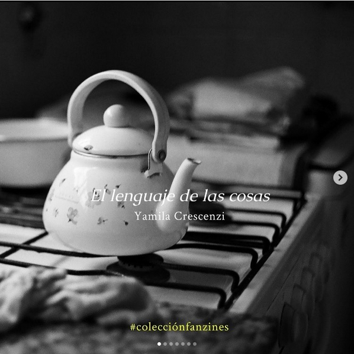
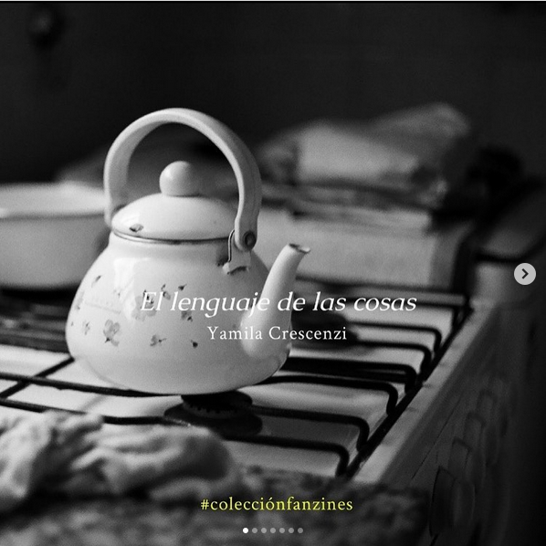
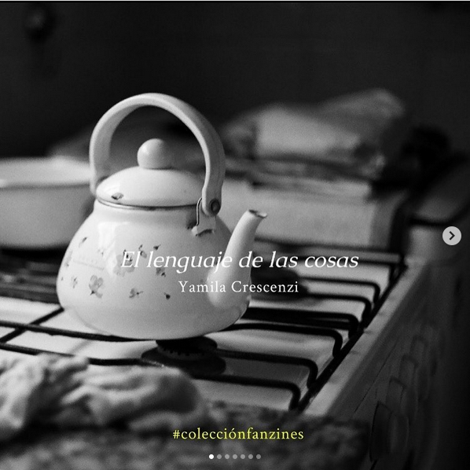

Destacados
Los participantes también interactúan con nuestras redes en donde se hace una selección de libros y fanzines para ayudar a la difusión de las obras.


 

Los participantes también interactúan con nuestras redes en donde se hace una selección de libros y fanzines para ayudar a la difusión de las obras.
